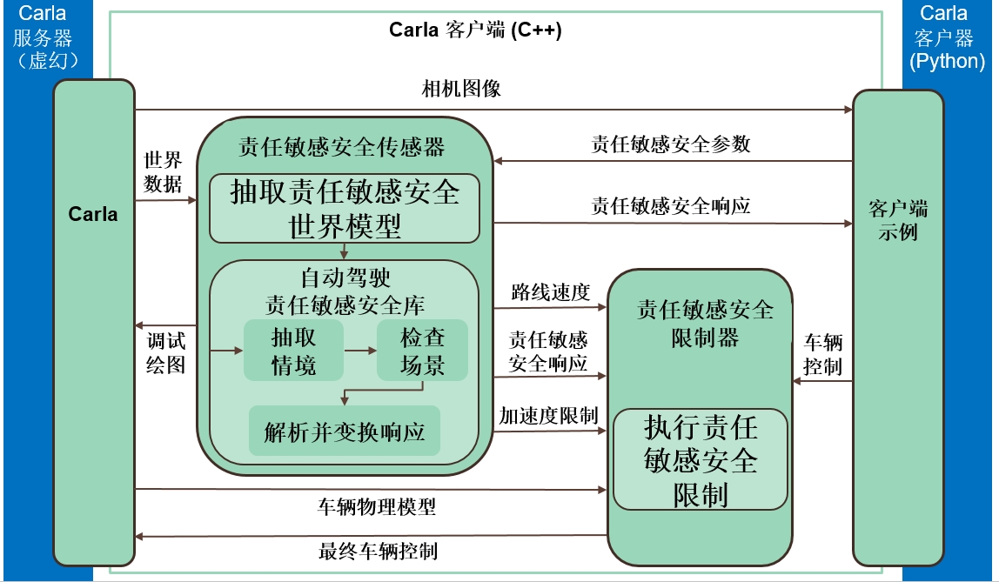

责任敏感安全¶
Carla 在客户端库中集成了 责任敏感安全的 C++ 库 。此功能允许用户调查责任敏感安全(Responsibility Sensitive Safety, RSS)的行为，而无需执行任何操作。Carla 将负责提供输入，并将输出动态应用到自动驾驶(Autonomous Driving, AD) 系统。
!!! 重要 目前，RSS 功能仅适用于 Linux 版本，且自 Carla 0.9.15 起已被弃用。
概述 ¶
责任敏感安全库实现了安全保证的数学模型。它接收传感器信息，并向车辆控制器提供限制。综上所述，责任敏感安全模块使用传感器数据来定义 情况。情境描述了自主车辆与环境元素的状态。对于每种情况，都会进行安全检查，并计算适当的响应。总体响应是所有响应的综合结果。有关该库的具体信息，请阅读 文档 ，尤其是 背景部分 。
这是在 Carla 中使用两个元素实现的。
- RssSensor 负责情况分析，并使用 ad-rss-lib 生成响应。
- RssRestrictor 通过限制车辆的命令来应用响应。
下图描绘了 责任敏感安全 与 Carla 架构的集成。

1. 服务器
- 将相机图像发送给客户端。 （仅当客户需要可视化时）。
- 为 RssSensor 提供世界数据。
- 将车辆的物理模型发送到 RssRestrictor。 （仅当默认值被覆盖时）。
2. 客户端
- 为 RssSensor 提供一些需要考虑的 参数 。
- 向 RssResrictor 发送初始 carla.VehicleControl.
3. RssSensor
- 使用 ad-rss-lib 提取情境、执行安全检查并生成响应。
- 向 RssRestrictor 发送包含正确响应和要应用的加速限制的响应。
4. RssRestrictor
- 如果客户端请求，则将响应应用于 carla.VehicleControl，并返回结果。
编译 ¶
责任敏感安全 集成必须与 Carla 的其余部分分开构建。ad-rss-lib 附带 LGPL-2.1 开源许可证，这会产生冲突。它必须静态链接到 libCarla。
提醒一下，到目前为止，该功能仅适用于 Linux 版本。
依赖 ¶
构建 责任敏感安全 及其依赖项还需要其他先决条件。查看官方文档 以了解更多信息。
Ubunutu (>= 16.04) 提供的依赖项。
sudo apt-get install libgtest-dev libpython-dev libpugixml-dev libtbb-dev
依赖项是使用 colcon 构建的，因此必须安装它。
pip3 install --user -U colcon-common-extensions
Python 绑定还有一些额外的依赖项。
sudo apt-get install castxml
pip3 install --user pygccxml pyplusplus
构建 ¶
完成此操作后，即可构建完整的依赖项和 责任敏感安全 组件集。
- 编译 LibCarla 以使用 责任敏感安全。
make LibCarla.client.rss
- 编译 PythonAPI 以包含 责任敏感安全 功能。
make PythonAPI.rss
- 作为替代方案，可以直接构建包。
make package.rss
当前状态 ¶
RssSensor ¶
carla.RssSensor 完全支持 ad-rss-lib v4.2.0 功能集 ，包括交叉路口、 stay on road 支持和 非结构化的 constellations（比如：行人） 。
到目前为止，服务器为传感器提供了周围环境的真实数据，包括其他交通参与者和交通信号灯的状态。
RssRestrictor ¶
当客户但调用时，carla.RssRestrictor 将修改车辆控制器，以通过给定的响应最好地达到所需的加速度或减速度。
由于 carla.VehicleControl 对象的结构，所应用的限制具有一定的局限性。这些控制器包括油门(throttle)、刹车(brake)和方向盘(streering)值。然而，由于汽车物理原理和简单的控制选项，这些可能无法满足。只需通过朝平行车道方向反向转向即可在横向方向进行限制干预。如果 责任敏感安全 请求减速，制动器将被激活。这取决于 carla.Vehicle 提供的车辆质量和制动扭矩。
!!! 笔记 在自动车辆控制器中，可以使计划的轨迹适应限制。可以使用快速控制环路（>1KHz）来确保遵循这些要求。
这奠定了 Carla 中 责任敏感安全 传感器的基础知识。在 传感器参考 中查找有关特定属性和参数的更多信息。
打开 Carla 并闲逛一会儿。如果有任何疑问，请随时在论坛中发布。